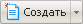

В этом разделе
Чтобы перейти к созданию нового файла перейдите в раздел сайта, где это необходимо сделать. Новый файл (страница) будет создан в текущей (открытой в данный момент) папке. Создание нового файла возможно двумя способами. Выберите пункт Новый файл на Контекстной панели (если вы в Административном разделе) или нажмите кнопку  на Административной панели сайта (Если вы в другом разделе). Дальнейшие действия зависят от того, какой из двух вариантов вы выбрали.
Если вы воспользовались командой Новый файл, то откроется форма Создание нового файла. Если вы воспользовались кнопкой , то откроется Мастер создания нового файла.
Форма Создание нового файла
Эта форма рекомендуется для использования разработчикам.
Контекстная панель
| Кнопка | Описание |
|---|
| Просмотр файла | Переключение в режим просмотра исходного кода файла. Кнопка отображается при редактировании документа. |
Редактировать
|
- Редактировать как текст - отображение текста файла, без включения PHP кода. Однако, в этом режиме отображаются все HTML-теги.
- Редактировать как PHP - редактирование исходного кода файла. Режим предназначен исключительно для использования разработчиками.
- Редактировать как HTML - редактирование документа в режиме встроенного визуального редактора HTML, позволяющего форматировать текст аналогично Microsoft Word.
|
| Переименовать | Кнопка для перехода к форме задания нового имени файла. Отображается при редактировании документа. |
| Удалить файл | Удаление файла.
|
Поля формы
| Поле | Описание |
|---|
| Шаблон | Шаблон, на основе которого будет создана страница. Например, Стандартная страница, Включаемая область для страницы или Включаемая область для раздела. Поле отображается при создании нового файла. |
| Имя файла | Имя создаваемого файла (с указанием расширения). Например, news.php. Поле отображается при создании нового файла. |
Без имени
| Поле для ввода кода страницы. |
Кнопки управления
| Кнопка | Значение |
|---|
| Сохранить | Сохранение страницы. |
| Применить | Сохранение выполненных изменений. Продолжение редактирования страницы. |
| Отменить | Отмена внесённых изменений. |
Мастер создания нового файла
Рекомендуется для использования обычным пользователям, редакторам сайта и контент-менеджерам. Создание файла выполняется в несколько шагов. В любом из шагов можно выйти из мастера и перейти в
Панель управления.
Шаг первый
Собственно создание файла
Название поля
| Описание
|
|---|
| Имя файла | Задается имя файла в латинице |
| Заголовок страницы | Задается заголовок страницы в том виде, в котором он будет виден для пользователя. |
| Перейти к редактированию | Если чекбокс установлен, то после завершения создания файла откроется визуальный редактор для редактирования страницы. |
| Добавить пункт меню | Если чекбокс установлен, то после завершения создания файла страница добавится в меню раздела, в котором файл создается.
Если чекбокс снят, то второй шаг пропускается. |
Шаг второй
Задание параметров для пункта меню
Название поля
| Описание
|
|---|
| Имя нового пункта меню | Имя, под которым страница будет отображена в меню |
| Тип меню | В меню какого типа будет создан пунк |
| Вставить перед пунктом |
Выбор места расположения пункта среди остальных. По умолчанию пункт ставится в конец списка.
|
|
Если завершить работу
Мастера на этом этапе (нажатием на кнопку
Готово), то откроется визуальный редактор для редактирования текста страницы.
Шаг третий
Задание свойств страницы
Название поля
| Описание
|
|---|
| Описание | Описание страницы |
Ключевые слова
| Ключевые слова для индексации поисковыми машинами
|
| Дополнительный заголовок страницы | Заголовок, который будет отображаться в заголовке браузера |
| Мета-Тег robots | Теги для поисковых машин
|
| Теги страницы | Теги для построения облака тегов. Установленный флажок в в чекбоксе справа от поля означает сортировку тегов по алфавиту. Снятый флажок - сортировка по частоте. |
После выполнения всех шагов
Мастера откроется визуальный редактор для редактирования текста страницы.